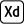

Peinture Cavolino
2020
Maquette de site web
Peinture Cavolino est une PME de la Drôme qui propose des travaux dans le secteur du batiment. Leur besoin de digitalisation s'est intensifié avec le survenu de la pandémie de COVID-19 et ont fait appel a un développeur pour leur site web, ce dernier n'étant pas a l'aise avec la création d'interface et ayant débuté mes apprentissages autonome sur la création de site web, j'ai eu la chance de pouvoir proposer une interface au client.
Le client avait une idée clair de ce qu'il voulait :
- One page
- Monochrome, bleu
- Sections du site : Notre entreprise, nos réalisations, contact et l'intégration des dernières publications facebook
- Photo de couverture (cf. maquettes ci-dessous)
- 